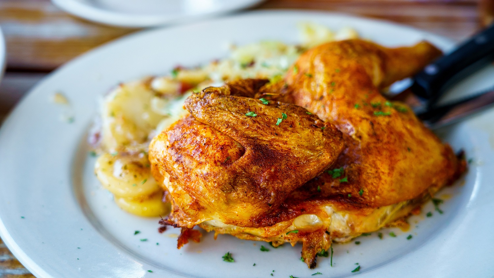

Caesar Salad Roast Chicken

Description
This is a delicious roasted chicken recipe where the chicken essentially marinates in Caesar salad dressing prior to roasting. I have made this recipe at least three times and it never fails to be delicious.
I like to marinate the chicken in the dressing up to a day ahead.
Ingredients
- 8 anchovies, mashed
- 8 garlic cloves
- 6 Tbsp mayonnaise - divide into two portions of 3Tbsp each
- 1 Tbsp Dijon mustard
- 2 Tbsp extra virgin olive oil - divide into two portions of 1Tbsp each
- 1.5 tsp ground black pepper
- 1 whole chicken
- Kosher salt
- 8 shallots unpeeled
- 2 lemons
- 1oz Parmesan
- 4oz country style bread torn into 1.5in pieces
- 2 romaine hearts
Steps
- Preheat oven to 450 degrees. Combine anchovies, garlic, 3Tbsp mayo, 1Tbsp mustard, 1Tbsp oil, 1.5tsp pepper. Set aside 1Tbsp of this mixture for later.
- Dry and salt chicken. Place breast side up in a cast iron skillet and surround with shallots halved lengthwise. Cover chicken with anchovy mayo mixture, brush shallots with any remainder.
- Place chicken in oven and roast 15min. Roast until chicken is goldren brown approx 45-55min. Be sure to check and stir shallots every 15min or so.
- Remove chicken and shallots from pan. Lower oven temp to 400 degrees. Zest and juice half a lemon, place in bowl. Add reserved anchovy mayo, reserved 3Tbsp mayo, and remaining 1Tbsp olive oil. Whisk to emulsify, then add parmesan. Salt and pepper to taste. Set aside.
- Add bread to skillet and turn to coat with pan drippings. Toast bread in oven until brown approx 12min-15min. Remove croutons and add to bowl with romaine and dressing. Toss to combine, salt and pepper to taste.